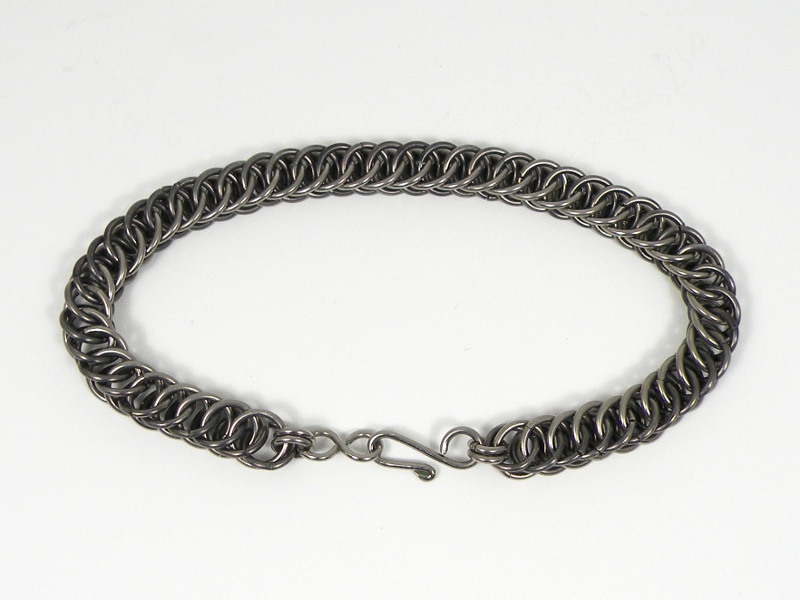

Chainmaille Bracelets - Miscellaneous Chainmaille Bracelets - Miscellaneous
Chainmaille Bracelets - Miscellaneous Chainmaille Bracelets - MiscellaneousOccasionally, I buy wire of different metals to make a special piece, or simply to assume a new challenge. The bracelet pictured below was definitely challenging. The rings which make the chain are half niobium and half tungsten.
Niobium is an absolute joy to work, and a beautiful metal. It does not tarnish (instead forming a clear passivating layer like aluminum), is soft enough to shape and cut easily, but hard enough to resist scratches and to take a high-luster polish. The metal weighs about the same as copper, and so has a nice heft to it and does not feel cheap like titanium or aluminum.
Tungsten is the most stubborn, mallevolent, demon metal I have ever worked. I have cut stainless and high-carbon steels with my jewelers saw, but the tungsten rings in this bracelet had to be cut with a diamond wheel because the saw would not scratch it. When I tried to bend the tungsten rings (no easy feat), most of them broke apart, or splintered into little strands. Each ring had to be closed in the flame of a propane torch to prevent breaking! Needless to say, it was uncomfortable. Nevertheless, I was in the end victorious, and incorporated tungsten into this bracelet.
Tungsten has some interesting physical properties, including weighing almost exactly as much as gold, which is more than twice the weight of copper and around 70% heavier than lead! The heft of tungsten is truly satisfying. It also possesses one of the highest melting points of all the pure elements: 6192 °F. Because this property makes the metal almost impossible to melt and cast, it is commonly sintered into shape; that is, the powdered metal is subjected to great heat and pressure until it bonds together.
Created by Sean Corron, April 2, 2011.